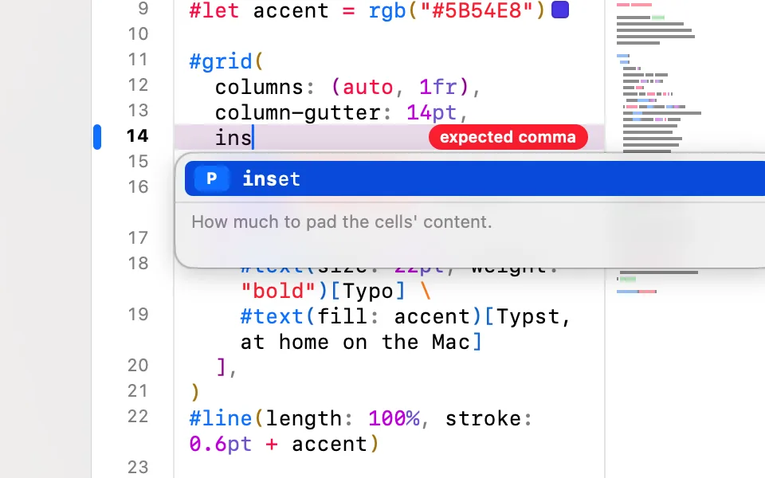
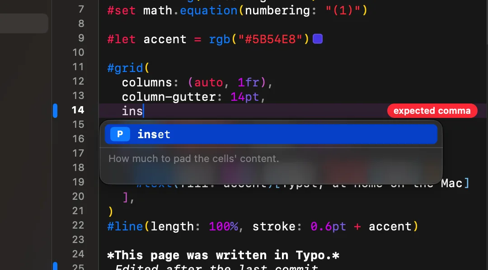
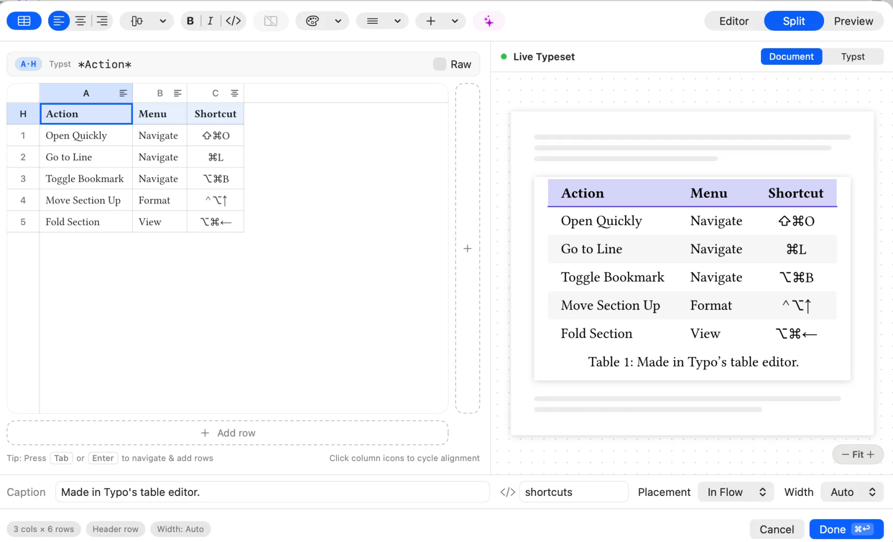
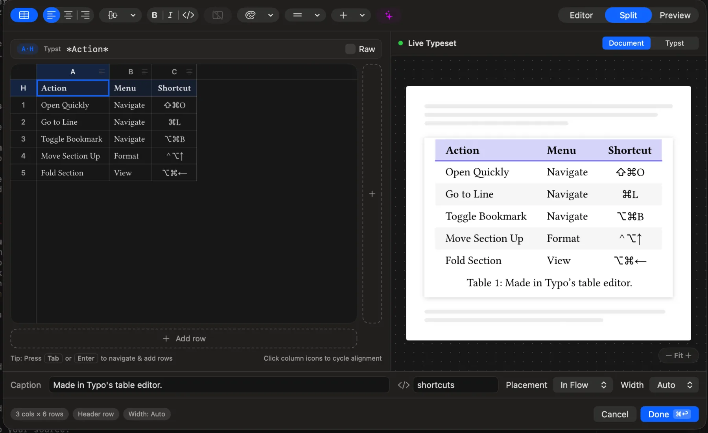
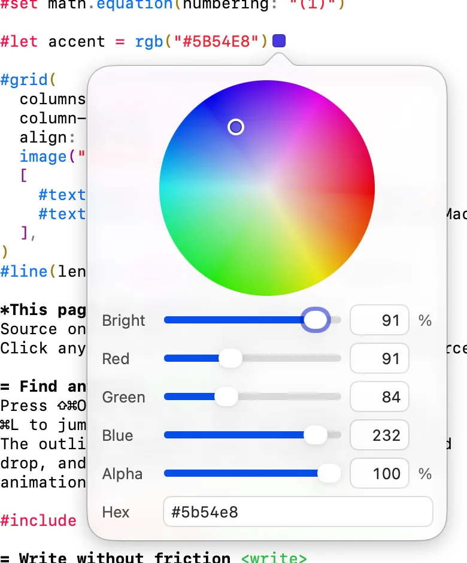
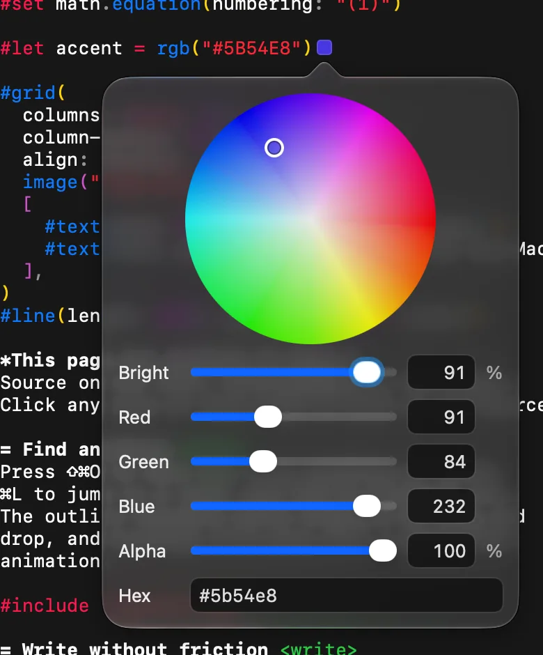

Writing
This page covers the tools that help you write: completion, formatting, editing in several places at once, tables, images and folding.
Completion and snippets
Typo suggests completions from the Typst engine. Suggestions know your document: variables, functions from imports, built-ins, and labels and bibliography keys that you can reach from the current file. Names from other files are suggested too, and accepting one adds the import.
To ask for completions yourself, press F5 or ⌥Esc. To stop suggestions while typing, or to change how you accept one, open Settings › Editing › Completion.
Snippets are in the library. To open it, choose View › Library… (⇧⌘L). It also holds images, symbols and fonts. To manage your own snippets, open Settings › Snippets.


Formatting
Typo formats code with typstyle.
- Format › Format Document (⌃⇧I) formats the whole file.
- Format › Format Selection formats the selected text.
- Format › Re-Indent (⌃I) indents the selected lines, or the current line, by bracket depth.
To format every time you save, turn on Format on Save in Settings › Editing. Autosave never formats. The line width and indent width come from the Display and Indentation settings.
The Format menu also has Bold (⌘B), Italic (⌘I), Underline (⌘U), Bullet List, Numbered List and Math. They wrap the selection in Typst markup, or remove it again.
Multiple cursors
- Edit › Select Next Occurrence (⌘D) adds the next match of the selected text.
- Edit › Select All Occurrences (⌃⌘G) selects every match.
- Edit › Add Caret Above (⌃⇧↑) and Edit › Add Caret Below (⌃⇧↓) add a caret on the neighbouring line.
Vim mode
To edit with Vim keys, choose View › Vim Mode. Press Esc for Normal mode, i to insert and v to select. The commands :w, :q and :wq work. A mode capsule shows the current mode.
Spell check
Typo checks spelling in the language you set with #set text(lang: …). Math is not checked.
Tables
The table editor shows a table(…) or grid(…) as a grid, like a spreadsheet.
- To insert a new table, choose Format › Insert Table….
- To edit a table, put the caret in it and choose Format › Edit Table…. You can also use the context menu or the inspector.
Cells are typeset by Typst, so math, references and your #set rules show as they will print. You edit with arrow keys, Tab, Return and Esc, and copy and paste work like in a spreadsheet. You can paste tab- or comma-separated data from Numbers or Excel, and the table grows to fit.
The editor can also insert, delete, duplicate and move rows and columns, merge and split cells, set alignment, bold and italic, set column widths, and apply a style: Plain, Grid, Header Line, Booktabs or Striped. It has fields for the figure caption, label and placement.
Press Done to apply the changes. They land in your document as one undo step.
The Intelligence popover in the table editor changes a table from a request in your own words, such as sorting or adding a totals row. It needs a model provider, see Assistant.


Images
To add an image, drop an image file onto a Typst file in the editor, or paste an image. Typo turns it into a figure. You can also use the images tab in the library (View › Library…).
Colour swatches
A small swatch appears next to colours such as rgb(…). Click it to open a colour picker next to the line. The picker has a wheel or sliders, and you can edit the numbers and the hex value.


Folding
You can collapse headings, brackets, figures, tables, math, raw blocks, comments and lists. Click the ribbon next to the line numbers, or use the View menu:
- View › Fold Section (⌥⌘←) and View › Unfold Section (⌥⌘→).
- View › Fold All Sections (⌥⇧⌘←) and View › Unfold All Sections (⌥⇧⌘→).
The duration of the fold animation is in Settings › Editing › Display.
More editor options
- Format › Move Section Up (⌃⌥↑) and Format › Move Section Down (⌃⌥↓) move the section around the caret with its subsections.
- View › Minimap shows an overview of the file at the right edge.
- View › Bigger Text (⌥⌘+), View › Smaller Text (⌥⌘-) and View › Default Text Size (⌃⌘0) change the editor font size.